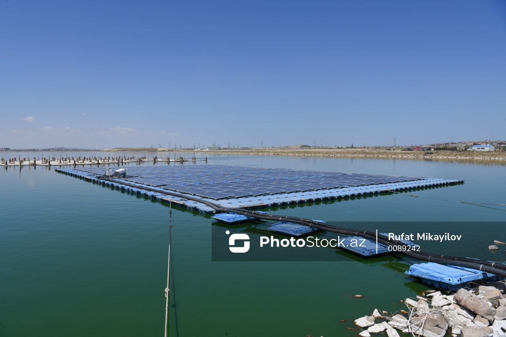
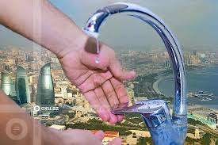
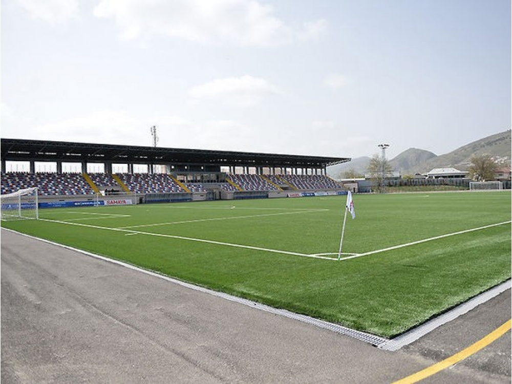
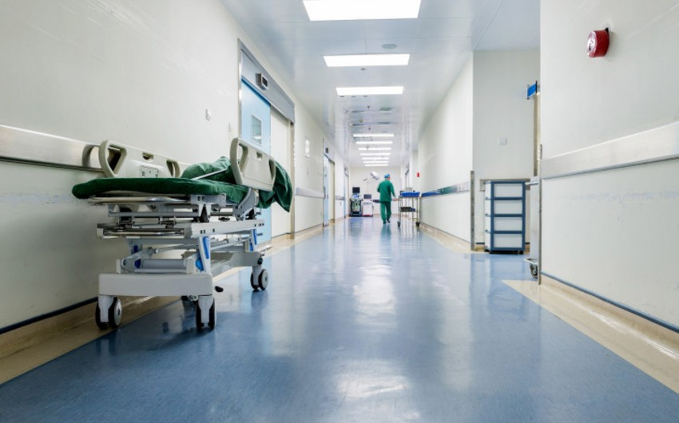
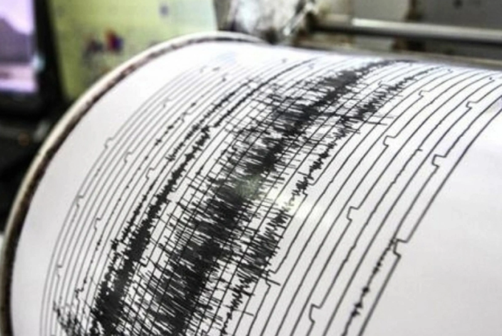

19 AVQ, 2024 / 11:32 324
Belçikalı ulduz Kevin De Bruyne İngiltərə Premyer Liqasının ən yaxşı yarımmüdafiəçisi seçildi

19 AVQ, 2024 / 11:24 5694
Paytaxt sakinlərinin SU SINAĞI: Kimdir günahkar?-RƏSMİ AÇIQLAMA

19 AVQ, 2024 / 11:16 677
AFFA "Turan Tovuz"un stadionda ot örtüyünün dəyiüdirilməsi ilə bağlı tapşırıq verib

19 AVQ, 2024 / 11:08 1808
Bakıda əri tərəfindən bıçaqlanan qadın iki gün sonra öldü

19 AVQ, 2024 / 11:00 1000
19 AVQ, 2024 / 11:40 499
Naxçıvanda oğurluq edən şəxs saxlanıldı
Kriminal